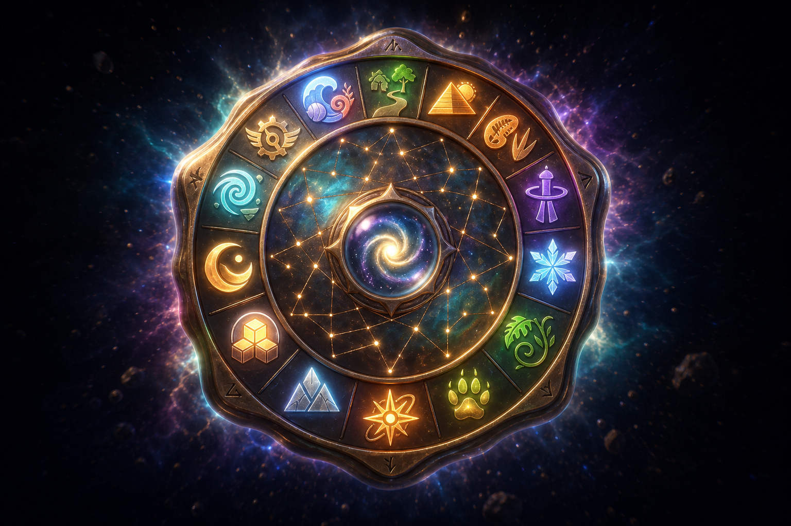
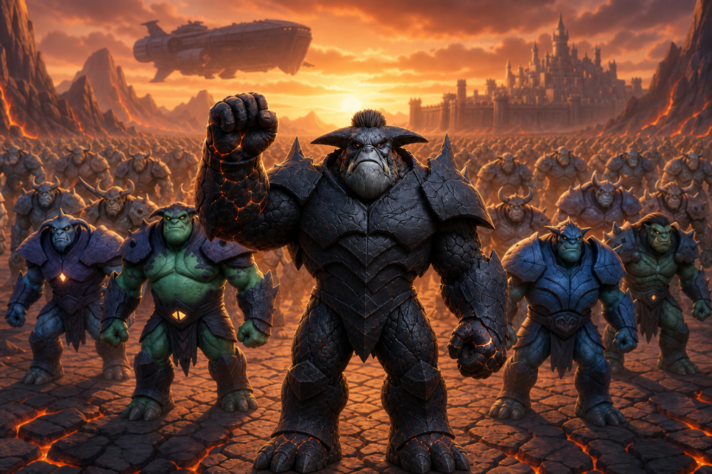
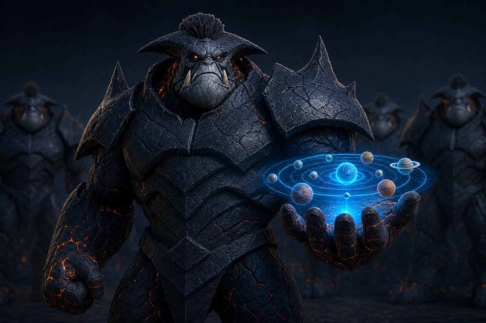
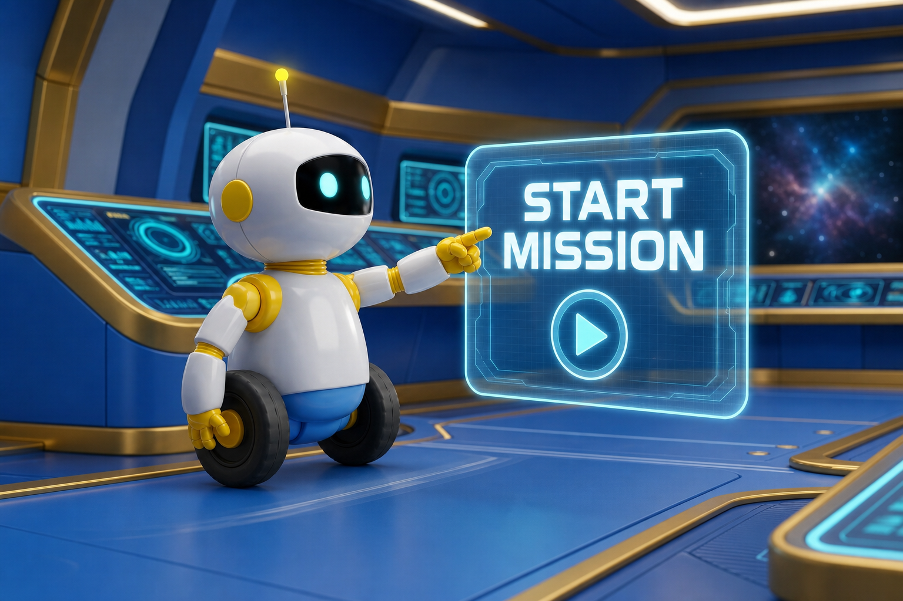

Shot 4 — The Search Begins

The Signal and the Stone — all eight owner-approved storyboard images and all five owner-approved voice performances.

Priority alert. Astral Realm Stone signal detected.


Find the Stone. Search every world. Nothing will stand between my Master and absolute control.


The Allen Girls have discovered the Astral Realm Stone. In the right hands, it can save all nine worlds. In the wrong hands, it can destroy them.
Kalhor and his armies are already searching. You and the Allen Girls can help protect the Stone—but first, we need to learn how you solve different kinds of challenges. S.P.A.R.K. will guide your Signal Clarity Scan.

Cadet, I’ll check two systems: communication and navigation. This is not pass or fail, and it is not a race. Your answers help us choose the right training for each subject. Ready? Let’s make the data sparkle.